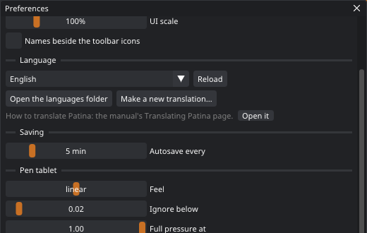
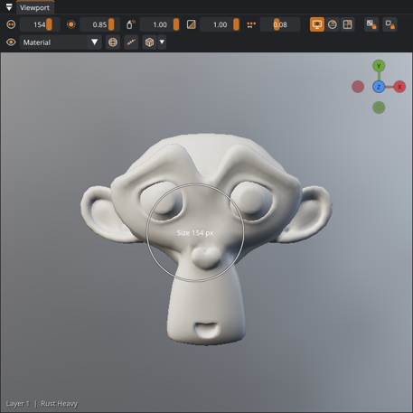
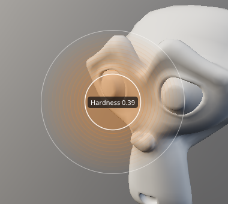
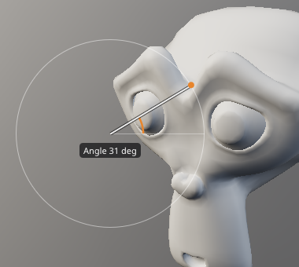

Blender keymap reference
If you paint in Blender, switch Patina to the Blender keymap: S samples a color, X flips colors, F resizes the brush, Shift+A adds, Shift+D duplicates, and the middle mouse button orbits. This page lists every key in that keymap. The default Patina keymap has its own page.
Turning it on

- Open Edit › Preferences…
- Choose Blender keymap. The navigation switches to Blender's as well (middle mouse orbits, Shift + middle pans, Ctrl + middle zooms), and Hold Ctrl while painting to paint with the secondary color is turned on. Both can be changed back separately in the same window.
- The choice is saved and kept on the next start. F1 shows the keys of the active keymap.
You can also switch from Edit › Keyboard shortcuts or from the F1 window. Switching keymaps replaces any keys you changed yourself. Individual keys can still be changed afterward in Edit › Keyboard shortcuts.
Painting
The Blender column shows what the key does in Blender's texture paint mode. Where Blender has no key for an action, Patina's own key is kept, marked Patina.
| Action | Key | Blender |
|---|---|---|
| Sample the color under the cursor | S | Same (Sample Color) |
| Swap primary and secondary color | X | Same (Flip Colors) |
| Paint with the secondary color | Hold Ctrl while painting | Same |
| Brush size | F, move the mouse, click (or Enter) to confirm; right-click or Esc cancels | Same (radial control) |
| Brush opacity (Blender's strength) | Shift+F, then the same | Same |
| Brush flow | G, then the same | Patina (Blender has no flow) |
| Brush hardness | Shift+G, then the same | Patina |
| Brush angle | Ctrl+F, move the mouse round (Shift: steps of 15 degrees) | Same (Blender turns the brush texture) |
| Brush smaller / bigger | [ / ] | Same |
| Clone source | Ctrl+click with the Clone tool | Same (Ctrl+click sets the clone point) |
| Straight line from the last stroke | Shift+click | Patina (Blender uses a Line stroke method) |
| Toggle X mirror | Shift+X | Patina |
| Topology lock: stay on the connected piece of mesh | Alt+T | Patina (Blender's face mask limits painting to selected faces instead) |
| Island lock: stay inside the UV island | Alt+L | Patina |
| Command palette: search everything | F3 | Same (Blender's menu search) |
| Stencil: move / rotate / scale | Hold T: left drag / Shift + left drag / wheel | Patina (Blender moves its stencil with the right mouse button) |
| Stencil on or off | Shift+T | Patina |
| Pen tablet: eraser end, barrel buttons | Eraser end erases; lower / upper button: right / middle click (middle orbits, as in Blender) | Same idea (Blender maps the buttons to right / middle click too) |
| Brush size and hardness by dragging | Ctrl + right drag | Patina |



Sliders
| Action | Input |
|---|---|
| Type a slider's value (Enter keeps it, Esc goes back) | Right-click the slider · Ctrl+click |
| Drag it / set it where you click | Left drag / left click |
Tools
Blender's paint tools have no single-key shortcuts, so the Patina keys stay, except where Blender uses the key for something else.
| B Paint | E Erase | C Clone | P Polygon fill |
| M Seams | L Island brush | J Smudge | N Note |
| Blur, Pick and Select faces: tool strip | |||
Blur has no key in the Blender keymap since 0.4, because U unwraps, as in Blender. Give it one in Edit › Keyboard shortcuts if you use it a lot.
UVs and face selection
| Action | Key | Blender |
|---|---|---|
| Island brush: paint the area, Ctrl removes | L, then left drag | Similar (L selects linked faces) |
| Make the painted area an island | U | Same idea (U opens the Unwrap menu) |
| Select all faces / none | A / Alt+A | Same |
| Grow / shrink the selection | Ctrl+Numpad + / - | Same (Select More / Less) |
| Unpin the selected islands | Alt+P | Same (in Blender's UV editor) |
Layers
| Action | Key | Blender |
|---|---|---|
| Add menu: paint, fill, fill with black mask, adjustment, folder, smart material | Shift+A (opens at the mouse) | Same (Add) |
| Duplicate the selected layer | Shift+D | Same (Duplicate) |
| Make an instance (linked copy) | Alt+D | Same (Duplicate Linked) |
| Group into a folder | Ctrl+G | Same (Make Group) |
| Solo the selected layer (toggle) | Numpad / | Same idea (Local View) |
| Delete the selected layer | Delete | Same (X is Flip Colors while painting) |
| Solo any layer | Alt+click its eye | Patina (Blender's outliner uses Ctrl+click) |
View
| Action | Key | Blender |
|---|---|---|
| Orbit / pan / zoom | Middle drag / Shift + middle / Ctrl + middle or the wheel | Same |
| Frame the model | Home or Numpad . | Same (View All / View Selected) |
| Front / right / top (opposite with Ctrl) | Numpad 1 3 7 | Same |
| Orthographic on/off | Numpad 5 | Same |
| Snap to the nearest side view while orbiting | Alt + middle drag, or hold Alt during one | Same |
| Back to your view (again: the side view) | Numpad 0 | Patina (Blender's Numpad 0 is the scene camera) |
| View pie | Hold Z | Same idea (Blender's shading pie) |
| Channel pie | Hold Shift+Z | Patina |
| Edit mode pie (the tools) | Hold ` | Patina (Blender's ` is the view pie; its Ctrl+Tab is the mode pie) |
| Quick Favorites | Hold Q | Same idea (Blender's Quick Favorites, as a pie) |
| Hide all panels | Ctrl+Space | Same idea (Toggle Maximize Area) |
| View modes | 1 – 9 | Patina |
| Shortcut window | F1 | Patina (Blender's F1 opens its manual) |
| Split / compare view · take a snapshot | \ · Shift+\ | Patina |
Files and editing
| Ctrl+O Open | Ctrl+S Save | Ctrl+Shift+S Save as |
| Ctrl+Z Undo | Ctrl+Shift+Z Redo | Ctrl+Q Quit |
| Ctrl+Alt+S Save incremental (same as Blender) | F12 Render image (same as Blender) | Shift + right drag Rotate the lighting (Patina) |
| Ctrl+E Export textures (Patina) | Ctrl+Shift+E Export again (Patina) | Ctrl+B Send to Blender (Patina) |
The UV editor keys (G / R / S, A / Alt+A, P / Alt+P to pin and unpin, F to frame, click and box select) already follow Blender in both keymaps. See the UV editor table.